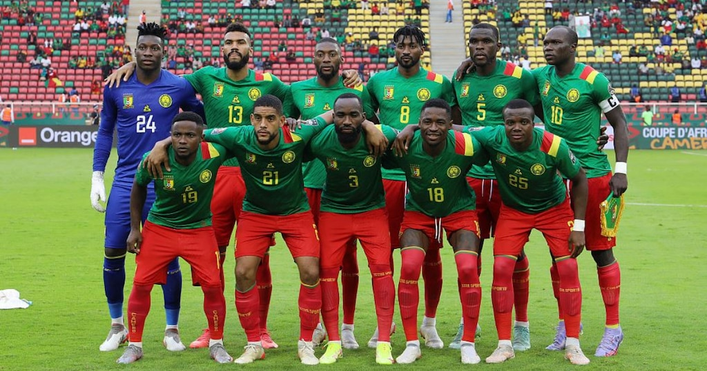

COPAS QUE JÁ PARTICIPOU:
A Seleção do Camarões Participou das Copas do Mundo de: 1982, 1990, 1994, 1998, 2002, 2010, 2014 e 2022.

PREMIAÇÕES QUE JÁ ALCANÇOU
O maior título do futebol camaronês é a medalha de ouro obtida nos Jogos Olímpicos de Verão de 2000. Na Copa do Mundo FIFA, seu melhor resultado foi o 7º lugar em 1990, quando surpreendeu e encantou a todos com seu futebol, principalmente o seu maior craque, Roger Milla, que aos 38 anos de idade, ainda roubava a cena.
NOME DO TÉCNICO:
Toni Conceição
PRINCIPAIS JOGADORES
Ekambi
Nsame
Olinga
Tabela de jogos
| Data/Hora | Estádio | Adversário |
|---|---|---|
| 24 nov 2022 / 13h00 | Estádio Al Janoub | Suíça |
| 28 nov 2022 / 13h00 | Estádio Al Janoub | Sérvia |
| 2 dez 2022 / 22h00 | Estádio Nacional Lusail | Brasil |